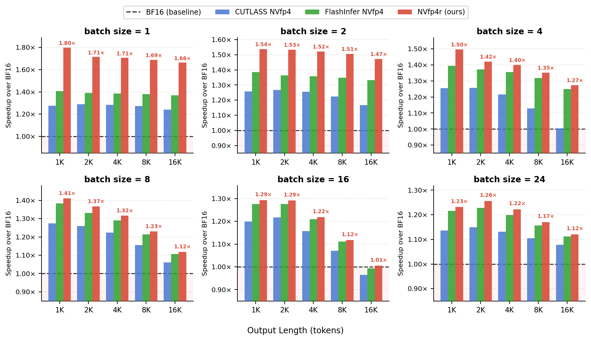
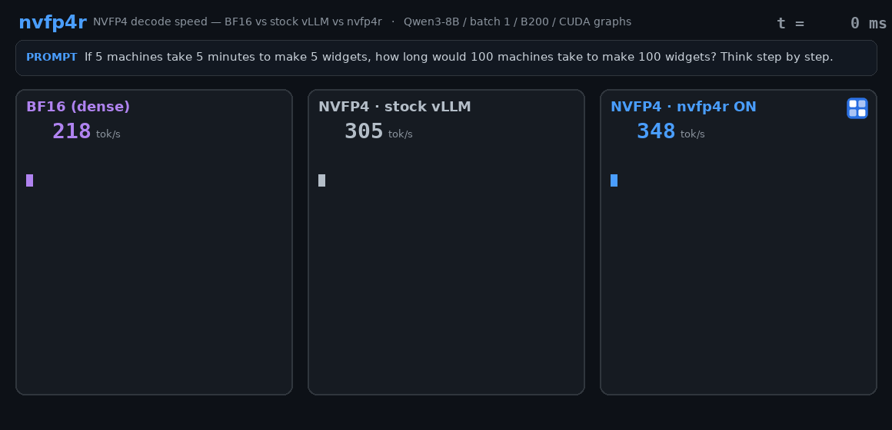
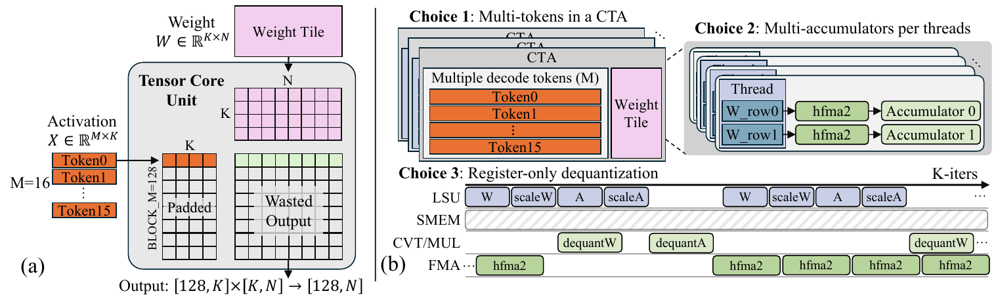
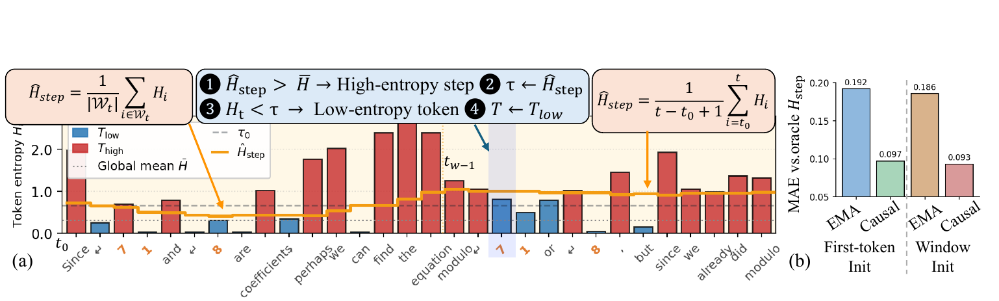
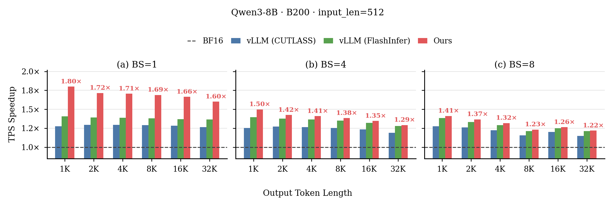
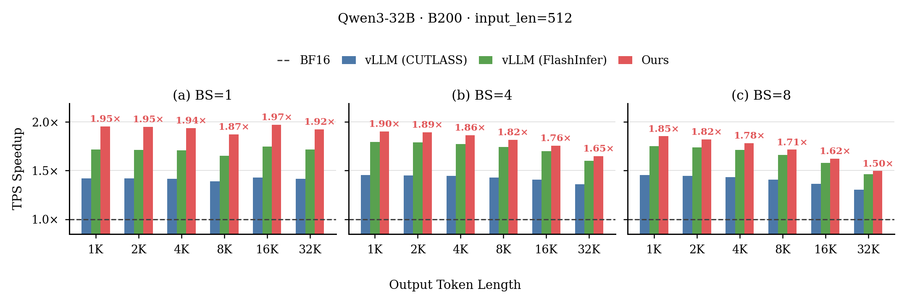

The first CUDA-core NVFP4 (W4A4) inference path — a framework built for low-batch, long-decode reasoning on Blackwell.

nvfp4r (Ours) turns NVFP4 into real decode speedup — above both vLLM NVFP4 backends (CUTLASS, FlashInfer) across output lengths, for Qwen3-8B (a) and 32B (b) at batch 1 and 8. Up to 1.95× over BF16 on Qwen3-32B.
nvfp4r backend. Recorded token rates, played back slowed down. The per-token win compounds across the long decode: nvfp4r finishes the trace in 10.5 s vs BF16's 19.6 s — 1.86× over BF16 and 1.24× over stock NVFP4 end-to-end, with the per-kernel GEMV gap reaching 2.5× (table below).nvfp4r is, to our knowledge, the first CUDA-core NVFP4 (W4A4) kernel for latency-critical small-batch decoding on Blackwell, delivering up to 2.5× faster decode GEMV over NVFP4 in vLLM and approximately 2× end-to-end speedup over BF16. ReSET, a step-aware temperature-scaling policy, closes the accuracy gap NVFP4 opens (up to ~2 points) with no extra forward passes — together making low-precision reasoning both fast and accurate.
Latency-critical long reasoning runs at low batch. Large reasoning models emit thousands of tokens per query — DeepSeek-R1 averages ~12K tokens on an AIME problem, up to 64K. Per-token decode latency, not aggregate throughput, sets the serving SLO, which confines feasible operation to small batch (M ≤ 8 active tokens) across thousands of sequential decode steps — even on a datacenter GPU like the B200.
At low batch the NVFP4 Tensor-Core advantage collapses — and NVFP4 has the most to lose. Its headline 4× peak throughput over BF16 is only realized at compute-bound batch sizes. Blackwell's NVFP4 GEMM path uses tcgen05.mma, whose tile is fixed at 128 rows along the token dimension: at small M the activation is padded to 128 rows and only M do useful work — 6.25% of the tile at M=8, 3.13% at M=4, and at single-token decode (M=1) just 1 of the 128 rows — under 1% by construction. That is a near-total collapse of exactly the peak-throughput advantage NVFP4 was deployed for. Throughput stacks hide this with batch sizes in the thousands; in the latency-critical regime it is the whole problem.
Existing NVFP4 kernels are all Tensor-Core-centric. vLLM, CUTLASS, MR-GPTQ, etc. all dispatch decode projections to tcgen05.mma, leaving the CUDA-core small-M regime unsupported. But decode is memory-bandwidth bound — the win comes from moving 4× fewer weight bytes, not from tensor-core math — so the right kernel exposes M at the thread level on the CUDA cores, not through a fixed tensor-core tile. That kernel did not exist. nvfp4r is, to our knowledge, the first.
nvfp4r CUDA-core kernelA decode-specialized NVFP4 kernel is what turns the format's 4× weight-bandwidth saving into real small-batch latency — the speedup every Tensor-Core stack leaves on the table.
To our knowledge the first CUDA-core NVFP4 (W4A4) inference path for latency-critical decoding on Blackwell. Instead of fighting the fixed 128-row Tensor-Core tile, nvfp4r computes the projection Y=XW at small M on the CUDA cores, exposing M at the thread level. Three design choices make it efficient:
half2 FMAs — no shared-memory staging, no inner-K-loop synchronization; load, FP4-unpack, scale, and accumulate overlap across K tiles.The kernel dispatches to a Tensor-Core path for prefill and large-M. It dequantizes NVFP4 to FP16 and uses half2 FMAs rather than native FP4 arithmetic, but by matching the decode shape it reaches up to 2.5× lower projection latency than the NVFP4 Tensor-Core baseline. Registered as torch.ops.nvfp4r.* with a drop-in vLLM linear adapter (sm_100a, CUDA 12.8+).
Use it as a framework — three lines, no model surgery:
# pip install -e kernels/ (Blackwell sm_100a, CUDA 12.8+) import nvfp4r nvfp4r.enable() # route every NVFP4 linear through nvfp4r llm = LLM("Qwen3-32B-nvfp4", quantization="modelopt_fp4")

The kernel restores NVFP4 speed; ReSET restores NVFP4 accuracy — together they make low-precision reasoning deployable, not just fast. ReSET is a drop-in decoding policy with no extra forward passes.
NVFP4 quantization distorts token-level uncertainty in two ways: it causes incorrect sampling at low-entropy symbolic tokens and over-concentration in high-uncertainty reasoning steps. ReSET estimates step-level uncertainty online and adapts the decoding temperature from both token- and step-level entropy — a drop-in vLLM logits processor.
Tt = Tlow if Ht < τt (τt=τ0, confident step)
Tt = Thigh if Ht ≥ τt (τt=Êstep, uncertain step)

ReSET vs. the NVFP4 (RTN) baseline across three reasoning benchmarks and five models (accuracy, ↑).
| Task | Method | R1‑Qwen‑7B | R1‑Qwen‑14B | Qwen3‑8B | Qwen3‑14B | Qwen3‑32B | Avg |
|---|---|---|---|---|---|---|---|
| AIME‑120 | NVFP4 | 39.6 | 52.4 | 62.5 | 70.4 | 74.4 | 59.9 |
| ReSET | 43.8 | 54.0 | 64.9 | 72.1 | 77.5 | 62.5 (+2.6) | |
| GPQA‑Diamond | NVFP4 | 47.1 | 53.7 | 50.7 | 57.4 | 62.8 | 54.3 |
| ReSET | 46.0 | 57.6 | 53.2 | 58.5 | 62.9 | 55.6 (+1.3) | |
| LiveCodeBench | NVFP4 | 29.5 | 37.1 | 36.4 | 46.7 | 46.5 | 39.2 |
| ReSET | 28.4 | 37.9 | 42.1 | 46.1 | 46.7 | 40.2 (+1.0) |
BF16 reference on AIME‑120: 65.1 avg. ReSET recovers a large fraction of the accuracy lost to NVFP4 with no extra forward passes.


Kernel-level decode latency (µs) for M=1 GEMV — nvfp4r vs. vLLM-CUTLASS.
Single-token decode (M=1) is the latency-critical regime; baseline is vLLM-CUTLASS at M=1, B200.
| Model | Layer | N | K | nvfp4r | vLLM | Speedup |
|---|---|---|---|---|---|---|
| Qwen3-8B | qkv_proj | 6144 | 4096 | 4.28 | 8.69 | 2.03× |
| Qwen3-8B | o_proj | 4096 | 4096 | 3.75 | 7.69 | 2.05× |
| Qwen3-8B | gate/up_proj | 12288 | 4096 | 6.40 | 11.45 | 1.79× |
| Qwen3-8B | down_proj | 4096 | 12288 | 6.66 | 16.61 | 2.49× |
| Qwen3-14B | qkv_proj | 7168 | 5120 | 5.53 | 10.79 | 1.95× |
| Qwen3-14B | o_proj | 5120 | 5120 | 4.64 | 9.08 | 1.96× |
| Qwen3-14B | gate/up_proj | 17408 | 5120 | 9.49 | 14.93 | 1.57× |
| Qwen3-14B | down_proj | 5120 | 17408 | 10.35 | 23.77 | 2.30× |
| Qwen3-32B | qkv_proj | 10240 | 5120 | 6.62 | 13.41 | 2.03× |
| Qwen3-32B | o_proj | 5120 | 8192 | 7.73 | 12.40 | 1.60× |
| Qwen3-32B | gate/up_proj | 25600 | 5120 | 13.25 | 25.89 | 1.96× |
| Qwen3-32B | down_proj | 5120 | 25600 | 15.00 | 33.26 | 2.22× |
Per-layer GEMV speedups of 1.57–2.49× over vLLM-CUTLASS at M=1; these compound through the decode-bound layers into the end-to-end speedup above.
@article{lee2026reset,
title = {ReSET: Accurate Latency-Critical NVFP4 Reasoning via Step-Aware Temperature Scaling},
author = {Lee, Sihwa and Lee, Janghwan and Yoo, Donghoon and Kim, Jae Gon and
Ryu, Hanyul and Ryu, Soojung and Choi, Jungwook},
journal = {arXiv preprint arXiv:2606.13233},
year = {2026}
}